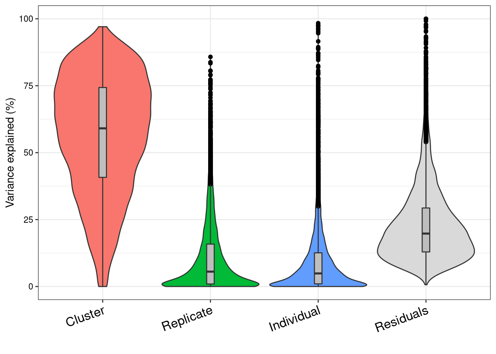

Variance Partition on Pseudobulk data
Last updated: 2020-08-31
Checks: 7 0
Knit directory: Embryoid_Body_Pilot_Workflowr/analysis/
This reproducible R Markdown analysis was created with workflowr (version 1.6.2). The Checks tab describes the reproducibility checks that were applied when the results were created. The Past versions tab lists the development history.
Great! Since the R Markdown file has been committed to the Git repository, you know the exact version of the code that produced these results.
Great job! The global environment was empty. Objects defined in the global environment can affect the analysis in your R Markdown file in unknown ways. For reproduciblity it's best to always run the code in an empty environment.
The command set.seed(20200804) was run prior to running the code in the R Markdown file. Setting a seed ensures that any results that rely on randomness, e.g. subsampling or permutations, are reproducible.
Great job! Recording the operating system, R version, and package versions is critical for reproducibility.
Nice! There were no cached chunks for this analysis, so you can be confident that you successfully produced the results during this run.
Great job! Using relative paths to the files within your workflowr project makes it easier to run your code on other machines.
Great! You are using Git for version control. Tracking code development and connecting the code version to the results is critical for reproducibility.
The results in this page were generated with repository version e16856a. See the Past versions tab to see a history of the changes made to the R Markdown and HTML files.
Note that you need to be careful to ensure that all relevant files for the analysis have been committed to Git prior to generating the results (you can use wflow_publish or wflow_git_commit). workflowr only checks the R Markdown file, but you know if there are other scripts or data files that it depends on. Below is the status of the Git repository when the results were generated:
Ignored files:
Ignored: .Rhistory
Ignored: .Rproj.user/
Ignored: analysis/.Rhistory
Ignored: output/.Rhistory
Ignored: output/pdfs/
Untracked files:
Untracked: analysis/RunscHCL_HarmonyBatchInd.Rmd
Untracked: analysis/SingleCell_HierarchicalClustering_NoGeneFilter.Rmd
Untracked: analysis/child/
Untracked: code/ConvertToDGE.Rmd
Untracked: code/ConvertToDGE_PseudoBulk.Rmd
Untracked: code/EB.getHumanMetadata.Rmd
Untracked: code/get_genelist_byPCTthresh.Rmd
Untracked: figure/
Untracked: output/DGELists/
Untracked: output/GeneLists_by_minPCT/
Untracked: output/mergedObjects/
Untracked: output/sampleQCrds/
Note that any generated files, e.g. HTML, png, CSS, etc., are not included in this status report because it is ok for generated content to have uncommitted changes.
These are the previous versions of the repository in which changes were made to the R Markdown (analysis/Pseudobulk_VariancePartition_Harmony.Batchindividual_ClusterRes0.1_minPCT0.2.Rmd) and HTML (docs/Pseudobulk_VariancePartition_Harmony.Batchindividual_ClusterRes0.1_minPCT0.2.html) files. If you've configured a remote Git repository (see ?wflow_git_remote), click on the hyperlinks in the table below to view the files as they were in that past version.
| File | Version | Author | Date | Message |
|---|---|---|---|---|
| Rmd | e16856a | KLRhodes | 2020-08-31 | wflow_publish("analysis/Pseudobulk_VariancePartition_Harmony.Batchindividual_ClusterRes*") |
library(dplyr)
Attaching package: 'dplyr'The following objects are masked from 'package:stats':
filter, lagThe following objects are masked from 'package:base':
intersect, setdiff, setequal, unionlibrary(limma)
library(edgeR)
library(variancePartition)Loading required package: ggplot2Loading required package: foreachLoading required package: scalesLoading required package: BiobaseLoading required package: BiocGenericsLoading required package: parallel
Attaching package: 'BiocGenerics'The following objects are masked from 'package:parallel':
clusterApply, clusterApplyLB, clusterCall, clusterEvalQ,
clusterExport, clusterMap, parApply, parCapply, parLapply,
parLapplyLB, parRapply, parSapply, parSapplyLBThe following object is masked from 'package:limma':
plotMAThe following objects are masked from 'package:dplyr':
combine, intersect, setdiff, unionThe following objects are masked from 'package:stats':
IQR, mad, sd, var, xtabsThe following objects are masked from 'package:base':
Filter, Find, Map, Position, Reduce, anyDuplicated, append,
as.data.frame, basename, cbind, colnames, dirname, do.call,
duplicated, eval, evalq, get, grep, grepl, intersect, is.unsorted,
lapply, mapply, match, mget, order, paste, pmax, pmax.int, pmin,
pmin.int, rank, rbind, rownames, sapply, setdiff, sort, table,
tapply, union, unique, unsplit, which, which.max, which.minWelcome to Bioconductor
Vignettes contain introductory material; view with
'browseVignettes()'. To cite Bioconductor, see
'citation("Biobase")', and for packages 'citation("pkgname")'.
Attaching package: 'variancePartition'The following object is masked from 'package:limma':
classifyTestsFchoose parameters (integration type, clustering res, min pct threshold)
f<- 'Harmony.Batchindividual'
pct<-0.2
res<- 'SCT_snn_res.0.1'path<- here::here("output/DGELists/")
submerged<- readRDS(paste0(path,"Pseudobulk_dge_",f, "_", res,"_minPCT",pct,".rds"))cpm<- cpm(submerged)
lcpm<- cpm(submerged, log=TRUE)L<- mean(submerged$samples$lib.size) *1e-6
M<- median(submerged$samples$lib.size) *1e-6genes.ribo <- grep('^RP',rownames(submerged),value=T)
genes.no.ribo <- rownames(submerged)[which(!(rownames(submerged) %in% genes.ribo))]
submerged$counts <- submerged$counts[which(rownames(submerged$counts) %in% genes.no.ribo),] #remove ribosomal genessubmerged<- calcNormFactors(submerged, method="TMM")
summary(submerged$samples$norm.factors) Min. 1st Qu. Median Mean 3rd Qu. Max.
0.8176 0.9349 1.0050 1.0052 1.0540 1.3300 design<- model.matrix(~submerged$samples$cluster+submerged$samples$batch+submerged$samples$ind)v<- voom(submerged, design, plot=T)
vAn object of class "EList"
$targets
group lib.size norm.factors cluster batch ind
0.Batch1.SNG-NA18511 1 1409771 1.0299240 0 Batch1 NA18511
0.Batch1.SNG-NA18858 1 88339833 1.0539880 0 Batch1 NA18858
0.Batch1.SNG-NA19160 1 1106878 1.0152859 0 Batch1 NA19160
0.Batch2.SNG-NA18511 1 3189774 0.9982165 0 Batch2 NA18511
0.Batch2.SNG-NA18858 1 99628244 1.0525291 0 Batch2 NA18858
Group
0.Batch1.SNG-NA18511 0.Batch1.SNG-NA18511
0.Batch1.SNG-NA18858 0.Batch1.SNG-NA18858
0.Batch1.SNG-NA19160 0.Batch1.SNG-NA19160
0.Batch2.SNG-NA18511 0.Batch2.SNG-NA18511
0.Batch2.SNG-NA18858 0.Batch2.SNG-NA18858
56 more rows ...
$E
0.Batch1.SNG-NA18511 0.Batch1.SNG-NA18858 0.Batch1.SNG-NA19160
NOC2L 6.638964 6.548069 6.237207
HES4 5.218783 4.940947 5.262894
ISG15 5.324717 5.452566 5.930318
AGRN 4.947481 4.330642 4.138905
SDF4 5.780662 5.935487 5.864730
0.Batch2.SNG-NA18511 0.Batch2.SNG-NA18858 0.Batch2.SNG-NA19160
NOC2L 6.199990 6.052279 6.101584
HES4 5.376394 4.906240 4.724087
ISG15 5.440288 5.323509 5.484575
AGRN 4.359968 4.274032 4.109171
SDF4 5.491452 5.494177 5.266712
0.Batch3.SNG-NA18511 0.Batch3.SNG-NA18858 0.Batch3.SNG-NA19160
NOC2L 6.330479 6.014823 6.197081
HES4 5.562119 4.879764 4.415591
ISG15 5.833719 5.420777 5.767354
AGRN 4.428086 4.335191 4.221235
SDF4 5.466343 5.484522 5.529410
1.Batch1.SNG-NA18511 1.Batch1.SNG-NA18858 1.Batch1.SNG-NA19160
NOC2L 6.256989 6.071072 6.095699
HES4 9.216089 7.600635 8.691377
ISG15 5.457375 5.401419 5.792769
AGRN 5.096716 4.928903 4.839761
SDF4 6.013398 5.952802 6.177094
1.Batch2.SNG-NA18511 1.Batch2.SNG-NA18858 1.Batch2.SNG-NA19160
NOC2L 6.020203 5.746048 5.921435
HES4 8.961112 6.914192 8.185544
ISG15 5.584400 5.846988 5.481842
AGRN 4.887505 4.771953 4.808975
SDF4 5.634987 5.441094 5.847058
1.Batch3.SNG-NA18511 1.Batch3.SNG-NA18858 1.Batch3.SNG-NA19160
NOC2L 5.914525 5.947617 6.019365
HES4 8.108209 6.999682 7.433628
ISG15 5.726622 6.046938 5.898200
AGRN 4.772352 4.652745 4.453329
SDF4 5.779522 5.592372 5.824881
2.Batch1.SNG-NA18511 2.Batch1.SNG-NA18858 2.Batch1.SNG-NA19160
NOC2L 6.149054 6.542508 6.178097
HES4 5.422492 5.948829 5.865813
ISG15 6.365217 6.825681 6.556433
AGRN 4.342569 4.811325 4.183400
SDF4 6.558424 6.317216 6.230266
2.Batch2.SNG-NA18511 2.Batch2.SNG-NA18858 2.Batch2.SNG-NA19160
NOC2L 5.641101 5.599918 5.903909
HES4 4.928728 3.725449 5.163926
ISG15 6.415605 6.227950 6.253017
AGRN 4.249301 3.725449 4.083683
SDF4 6.121796 5.840927 6.134677
2.Batch3.SNG-NA18511 2.Batch3.SNG-NA18858 2.Batch3.SNG-NA19160
NOC2L 5.963510 5.792228 6.070385
HES4 3.754793 5.140152 4.853651
ISG15 6.171530 6.856359 6.341741
AGRN 3.641582 2.332797 3.678776
SDF4 6.076721 6.033237 5.917017
3.Batch1.SNG-NA18511 3.Batch1.SNG-NA18858 3.Batch1.SNG-NA19160
NOC2L 6.383545 6.537884 6.196177
HES4 6.978209 6.813518 6.519236
ISG15 5.982072 4.792456 5.050893
AGRN 5.329995 4.792456 5.120687
SDF4 6.209964 5.749388 5.823875
3.Batch2.SNG-NA18511 3.Batch2.SNG-NA18858 3.Batch2.SNG-NA19160
NOC2L 6.196577 5.693029 6.128192
HES4 6.250516 5.330458 6.447564
ISG15 5.822182 4.845032 4.889632
AGRN 5.672156 4.108066 5.295435
SDF4 5.925275 5.330458 5.721170
3.Batch3.SNG-NA18511 3.Batch3.SNG-NA18858 3.Batch3.SNG-NA19160
NOC2L 5.994855 6.599351 5.966133
HES4 4.473739 5.751354 5.540253
ISG15 4.581992 5.014388 4.174892
AGRN 4.948419 5.014388 5.113659
SDF4 5.519835 4.651818 5.866677
4.Batch1.SNG-NA18511 4.Batch1.SNG-NA18858 4.Batch1.SNG-NA19160
NOC2L 5.918890 5.328737 5.762589
HES4 7.235340 6.879672 6.893938
ISG15 6.687102 7.898486 6.987736
AGRN 5.703063 5.636471 6.149612
SDF4 6.595062 6.477205 6.186046
4.Batch2.SNG-NA18511 4.Batch2.SNG-NA18858 4.Batch2.SNG-NA19160
NOC2L 5.854994 5.556499 5.720397
HES4 7.052565 6.942778 6.623749
ISG15 6.710415 7.537390 6.824020
AGRN 5.162011 5.149874 5.353835
SDF4 6.310723 5.952428 6.315556
4.Batch3.SNG-NA18511 4.Batch3.SNG-NA18858 4.Batch3.SNG-NA19160
NOC2L 5.930439 5.816523 5.906183
HES4 5.598550 7.025558 6.325320
ISG15 6.128039 7.888389 6.978991
AGRN 5.083501 5.427112 5.260126
SDF4 6.150940 6.018832 6.292194
5.Batch1.SNG-NA18511 5.Batch1.SNG-NA18858 5.Batch1.SNG-NA19160
NOC2L 6.528132 6.624561 6.524047
HES4 7.887655 5.609915 6.989321
ISG15 4.556548 6.103729 4.032053
AGRN 5.669662 5.124488 5.417393
SDF4 6.155089 5.723125 5.803557
5.Batch2.SNG-NA18511 5.Batch2.SNG-NA18858 5.Batch2.SNG-NA19160
NOC2L 6.063413 5.989100 6.104674
HES4 7.772730 6.188409 6.472066
ISG15 4.773593 5.141103 3.318892
AGRN 5.462839 5.757775 5.057730
SDF4 5.383646 5.626530 5.431484
5.Batch3.SNG-NA18511 5.Batch3.SNG-NA18858 5.Batch3.SNG-NA19160
NOC2L 5.988417 5.583832 6.089701
HES4 7.132890 4.760710 6.115973
ISG15 4.611302 4.760710 3.113801
AGRN 4.935043 4.760710 4.590511
SDF4 5.292772 5.815157 5.713177
6.Batch1.SNG-NA18511 6.Batch1.SNG-NA18858 6.Batch1.SNG-NA19160
NOC2L 5.973298 5.483099 5.672436
HES4 7.170099 5.968526 6.889853
ISG15 9.596589 5.483099 8.101527
AGRN 6.550843 4.746133 6.535801
SDF4 6.490089 6.331096 6.167761
6.Batch2.SNG-NA18511 6.Batch2.SNG-NA19160 6.Batch3.SNG-NA18511
NOC2L 6.106462 5.711079 5.503024
HES4 5.888282 6.776502 6.943597
ISG15 7.994672 7.437596 7.991602
AGRN 5.028460 6.122393 5.245866
SDF4 5.558975 5.825412 6.038061
6.Batch3.SNG-NA19160
NOC2L 5.637787
HES4 6.401613
ISG15 8.324006
AGRN 5.186803
SDF4 6.011076
10180 more rows ...
$weights
[,1] [,2] [,3] [,4] [,5] [,6] [,7] [,8]
[1,] 6.431916 41.51425 5.284795 9.811831 40.40790 11.140958 25.98550 39.87328
[2,] 4.550121 30.19087 3.723621 6.313930 28.19284 6.855538 17.96080 24.99744
[3,] 4.528174 35.58762 3.660784 7.239058 35.82264 7.742423 21.68234 35.05005
[4,] 3.095077 25.45962 2.375542 4.439929 24.85733 4.987377 14.45915 22.57551
[5,] 4.886507 35.50497 4.230978 7.072442 33.62303 8.365265 21.44130 32.96049
[,9] [,10] [,11] [,12] [,13] [,14] [,15] [,16]
[1,] 20.08378 27.67708 14.68138 27.70318 27.94566 18.93523 21.87930 26.97333
[2,] 12.54769 52.22316 25.89675 50.39992 50.50964 30.70401 38.13841 43.67227
[3,] 15.57410 25.06019 13.71973 23.99115 26.17103 18.56348 19.42460 25.03075
[4,] 10.04298 21.07287 9.32857 20.98907 21.36202 12.99572 16.19713 18.80142
[5,] 16.41662 26.84389 14.04097 27.13414 26.36484 17.66351 20.77130 25.26352
[,17] [,18] [,19] [,20] [,21] [,22] [,23]
[1,] 9.134733 22.80686 13.667003 2.5520182 19.241403 9.217620 0.6980291
[2,] 15.484326 35.64761 11.203415 1.2808396 15.670514 6.558968 0.4335242
[3,] 8.719828 20.10535 15.531270 3.4625833 20.420649 11.403381 0.9609097
[4,] 4.556935 15.39915 5.968453 0.7479667 9.926134 3.957180 0.3158993
[5,] 8.073718 21.51586 14.760670 2.9102387 20.730546 9.708264 0.7309726
[,24] [,25] [,26] [,27] [,28] [,29] [,30]
[1,] 14.176676 12.661618 0.6563529 16.932067 6.431747 2.0237300 19.77768
[2,] 10.349558 7.889203 0.3536638 10.941530 7.352719 1.7630311 20.55233
[3,] 15.859331 14.927886 0.8818901 18.529036 3.832212 1.0393622 12.62874
[4,] 6.263387 4.724821 0.2718365 7.032874 4.208964 0.9955042 14.59363
[5,] 14.943063 13.075462 0.6789117 17.597051 5.154360 1.4536564 17.45418
[,31] [,32] [,33] [,34] [,35] [,36] [,37]
[1,] 3.728046 0.6475818 14.517105 6.425352 0.8934026 17.27681 10.132333
[2,] 3.884228 0.5584429 14.378407 5.549849 0.6336634 15.04216 16.762215
[3,] 1.972346 0.4461850 8.819443 3.962643 0.5858969 11.00485 15.790206
[4,] 2.190698 0.4137049 10.059942 3.773516 0.4831896 11.08245 9.451264
[5,] 2.845599 0.5090940 12.013245 4.856936 0.6777276 14.44734 12.619581
[,38] [,39] [,40] [,41] [,42] [,43] [,44]
[1,] 5.551504 7.791019 10.68701 2.447371 10.025377 9.944092 3.254204
[2,] 8.783537 13.245523 16.58118 3.694754 15.119523 13.671604 3.801898
[3,] 10.728431 12.235040 17.09536 4.900442 15.462474 16.056730 6.047476
[4,] 4.811975 7.139187 10.04651 1.964783 9.321564 8.057447 2.232151
[5,] 7.265883 10.269233 12.71600 3.190897 12.204877 11.832167 3.873585
[,45] [,46] [,47] [,48] [,49] [,50] [,51]
[1,] 18.01059 10.222377 3.138945 15.444373 10.530066 1.1815080 10.304070
[2,] 21.96642 13.928699 3.679351 19.016687 13.489610 1.3268478 12.610055
[3,] 24.76003 4.571048 1.147407 7.124721 4.964830 0.6028348 4.532964
[4,] 15.56020 7.030687 1.655454 11.581170 7.325607 0.7382867 7.076254
[5,] 20.62655 8.434597 2.402367 13.524820 8.295530 0.8877284 8.239576
[,52] [,53] [,54] [,55] [,56] [,57] [,58]
[1,] 9.745966 1.3454345 11.867007 2.648834 0.4577756 3.572129 1.742307
[2,] 10.820897 1.1826829 12.357834 4.453690 0.6094011 5.362935 3.333483
[3,] 4.543722 0.6518845 5.190990 6.684286 1.2943609 8.171292 5.347110
[4,] 5.758106 0.7087039 7.233630 2.678536 0.4337226 3.572191 1.779529
[5,] 7.494726 0.9758391 9.590081 3.275818 0.5301035 4.177155 2.125773
[,59] [,60] [,61]
[1,] 3.436238 2.369097 4.525188
[2,] 4.793791 3.356727 5.524276
[3,] 8.319574 6.458774 11.269555
[4,] 3.453803 1.933325 4.058538
[5,] 3.890978 2.791188 5.100664
10180 more rows ...
$design
(Intercept) submerged$samples$cluster1 submerged$samples$cluster2
1 1 0 0
2 1 0 0
3 1 0 0
4 1 0 0
5 1 0 0
submerged$samples$cluster3 submerged$samples$cluster4
1 0 0
2 0 0
3 0 0
4 0 0
5 0 0
submerged$samples$cluster5 submerged$samples$cluster6
1 0 0
2 0 0
3 0 0
4 0 0
5 0 0
submerged$samples$batchBatch2 submerged$samples$batchBatch3
1 0 0
2 0 0
3 0 0
4 1 0
5 1 0
submerged$samples$indNA18858 submerged$samples$indNA19160
1 0 0
2 1 0
3 0 1
4 0 0
5 1 0
56 more rows ...form<- ~ (1|cluster) + (1|batch) + (1|ind)remove(cpm)
remove(lcpm)varpart<- suppressWarnings(fitExtractVarPartModel(v, form, submerged$samples))head(varpart) batch cluster ind Residuals
NOC2L 0.25424383 0.4356235 0.032543903 0.2775888
HES4 0.10982464 0.6212243 0.144847108 0.1241040
ISG15 0.00000000 0.8977522 0.000000000 0.1022478
AGRN 0.07315185 0.7950227 0.009582272 0.1222432
SDF4 0.26161018 0.5499814 0.000844635 0.1875638
B3GALT6 0.39764253 0.1884434 0.213082114 0.2008320vp<- sortCols(varpart)plotPercentBars(vp[1:10,])plotVarPart(vp)
#do the genes most effected by individual match what I did in limma?
vp<- vp[order(vp$ind, decreasing=T),]
head(vp, 30) cluster batch ind Residuals
EIF1AY 6.144931e-03 3.349686e-04 0.9834965 0.010023558
DDX3Y 3.748546e-03 0.000000e+00 0.9761965 0.020054968
CAT 1.874614e-03 3.613844e-03 0.9746316 0.019879937
TYW3 2.224533e-02 6.790031e-04 0.9705810 0.006494635
TRIM61 1.035051e-02 3.983839e-03 0.9635534 0.022112298
USP9Y 1.039275e-02 0.000000e+00 0.9595675 0.030039758
CRYZ 3.042632e-02 8.093894e-11 0.9524670 0.017106676
ZNF280D 1.202154e-03 0.000000e+00 0.9461937 0.052604156
RRAGB 4.553786e-02 5.430730e-04 0.9156666 0.038252467
USP51 7.339352e-02 0.000000e+00 0.8939654 0.032641100
MAGEH1 6.450693e-02 1.547711e-02 0.8901517 0.029864255
TAF9B 9.667057e-03 2.640521e-02 0.8866498 0.077277963
IAH1 6.194002e-02 2.131240e-03 0.8719143 0.064014481
CHCHD2 5.426367e-11 0.000000e+00 0.8706533 0.129346743
PRKY 6.831220e-02 8.393839e-12 0.8669960 0.064691809
ZNF300 4.359623e-02 0.000000e+00 0.8611557 0.095248112
MRPS14 6.013065e-02 1.371471e-03 0.8542585 0.084239356
CTPS2 3.175236e-02 1.333339e-02 0.8461835 0.108730751
USF1 2.796512e-02 2.715840e-03 0.8236890 0.145630081
DAP3 2.544020e-02 3.399111e-02 0.8195368 0.121031885
HCCS 1.179747e-01 1.417360e-02 0.8060224 0.061829325
HAX1 7.733343e-02 5.970607e-02 0.8005043 0.062456222
MRPL55 1.171032e-01 1.824943e-02 0.7982043 0.066443096
GPNMB 2.203041e-02 1.714753e-02 0.7939977 0.166824367
PNPO 1.166646e-01 0.000000e+00 0.7925739 0.090761580
THOC3 1.486841e-01 9.715932e-03 0.7789557 0.062644333
FAM199X 3.530993e-09 1.506090e-01 0.7755369 0.073854168
IRX2 1.372118e-01 0.000000e+00 0.7753835 0.087404688
PNPLA4 9.743405e-02 4.368805e-02 0.7743761 0.084501776
RNF187 1.244145e-01 5.091691e-02 0.7738657 0.050802936#do the genes most effected by batch match what I did in limma?
vp<- vp[order(vp$batch, decreasing=T),]
head(vp, 30) cluster batch ind Residuals
LRRC75A 6.849048e-02 0.8576910 1.115801e-02 0.06266048
AP001267.5 1.102182e-02 0.8376236 7.440850e-02 0.07694611
STRN3 2.998919e-11 0.8338896 2.587854e-02 0.14023183
EEF1A1 1.093628e-01 0.8059204 4.956848e-02 0.03514833
TBL1XR1 1.176081e-01 0.8055783 5.707459e-03 0.07110617
PAN3 2.714169e-02 0.8049879 2.754807e-03 0.16511562
SF3A2 4.593915e-02 0.7905420 1.071238e-01 0.05639502
CAPZA1 1.508438e-01 0.7894629 0.000000e+00 0.05969323
NUFIP2 4.688186e-02 0.7730647 4.777515e-03 0.17527594
TMED2 1.102458e-01 0.7706161 1.415880e-02 0.10497923
TMEM167A 9.531910e-02 0.7703517 3.100715e-02 0.10332206
PRPF31 1.205761e-01 0.7655385 0.000000e+00 0.11388541
USP14 1.304981e-01 0.7627157 8.323503e-03 0.09846272
PPP1CB 1.954140e-01 0.7593809 0.000000e+00 0.04520510
SMARCB1 1.484961e-01 0.7590542 2.025282e-02 0.07219695
MED21 9.962519e-02 0.7552114 3.376527e-03 0.14178683
SMNDC1 4.591397e-11 0.7531590 4.095119e-03 0.24274590
SLC25A6 1.382370e-01 0.7449867 1.692882e-02 0.09984757
UBE2W 1.356164e-01 0.7396876 6.206656e-10 0.12469607
PSMD9 1.227247e-01 0.7375871 8.280887e-03 0.13140734
LYPLA2 1.781684e-01 0.7242559 0.000000e+00 0.09757570
TMEM259 7.153402e-02 0.7231332 6.686416e-03 0.19864634
HSF1 1.758666e-01 0.7177011 3.272457e-03 0.10315983
SCAMP1 5.747302e-02 0.7148216 4.756349e-02 0.18014186
C1D 9.565813e-02 0.7048232 0.000000e+00 0.19951867
NME2 2.350708e-01 0.6931790 1.790704e-02 0.05384317
URM1 1.221064e-01 0.6928891 3.378720e-03 0.18162580
AMZ2 8.852494e-02 0.6920517 5.086553e-03 0.21433678
SYNC 1.759635e-01 0.6837684 5.794582e-02 0.08232231
C6orf62 1.819567e-01 0.6831661 5.383999e-02 0.08103726summary(vp$ind) Min. 1st Qu. Median Mean 3rd Qu. Max.
0.000000 0.009983 0.048856 0.094835 0.125722 0.983496 summary(vp$batch) Min. 1st Qu. Median Mean 3rd Qu. Max.
0.000000 0.009503 0.055552 0.109027 0.158430 0.857691 #genes for which individual contributes more to variance than batch?
vp.indgreaterthanbatch<- vp[vp$ind>vp$batch,]
dim(vp.indgreaterthanbatch) #vp greater than batch for 5266 out of 11356[1] 4866 4head(vp.indgreaterthanbatch, 20) cluster batch ind Residuals
RNF2 0.101598822 0.3993237 0.4059018 0.09317576
UHMK1 0.055849797 0.3929716 0.4176070 0.13357165
TSNAX 0.105274594 0.3685170 0.4700434 0.05616509
PFKFB4 0.073314775 0.3491434 0.4031206 0.17442121
SF3B4 0.134685700 0.3309957 0.4645517 0.06976690
ATF5 0.166218918 0.3303890 0.3334111 0.16998100
MDM4 0.147244371 0.3280756 0.4671521 0.05752796
SNAP47 0.071429856 0.3276325 0.5033451 0.09759252
GAPDH 0.189010604 0.3216096 0.3922979 0.09708187
LBR 0.264048007 0.3136177 0.3618201 0.06051418
TOR1AIP2 0.262389473 0.3095165 0.3394613 0.08863276
SCNM1 0.091797568 0.3059089 0.5300511 0.07224245
B4GALT2 0.203722052 0.3036218 0.3119512 0.18070497
CDC73 0.133178939 0.3028857 0.4813637 0.08257166
ZNF678 0.259677298 0.3000934 0.3317287 0.10850058
POM121C 0.000000000 0.2908554 0.3215507 0.38759399
GBE1 0.000000000 0.2882045 0.3949079 0.31688758
LRIF1 0.002752361 0.2799415 0.2915868 0.42571928
SMG9 0.069566724 0.2778748 0.5368356 0.11572285
EIF2S3 0.217554026 0.2776679 0.3951021 0.10967595
sessionInfo()R version 3.6.1 (2019-07-05)
Platform: x86_64-pc-linux-gnu (64-bit)
Running under: Scientific Linux 7.4 (Nitrogen)
Matrix products: default
BLAS/LAPACK: /software/openblas-0.2.19-el7-x86_64/lib/libopenblas_haswellp-r0.2.19.so
locale:
[1] C
attached base packages:
[1] parallel stats graphics grDevices utils datasets methods
[8] base
other attached packages:
[1] variancePartition_1.16.1 Biobase_2.46.0 BiocGenerics_0.32.0
[4] scales_1.1.1 foreach_1.5.0 ggplot2_3.3.2
[7] edgeR_3.28.1 limma_3.42.2 dplyr_1.0.0
[10] workflowr_1.6.2
loaded via a namespace (and not attached):
[1] Rcpp_1.0.5 locfit_1.5-9.4 here_0.1-11
[4] lattice_0.20-38 prettyunits_1.1.1 gtools_3.8.2
[7] rprojroot_1.3-2 digest_0.6.25 plyr_1.8.6
[10] R6_2.4.1 backports_1.1.8 evaluate_0.14
[13] pillar_1.4.6 gplots_3.0.4 rlang_0.4.7
[16] progress_1.2.2 minqa_1.2.4 gdata_2.18.0
[19] whisker_0.4 nloptr_1.2.2.2 Matrix_1.2-18
[22] rmarkdown_2.3 labeling_0.3 splines_3.6.1
[25] BiocParallel_1.20.1 lme4_1.1-23 statmod_1.4.34
[28] stringr_1.4.0 munsell_0.5.0 compiler_3.6.1
[31] httpuv_1.5.4 xfun_0.16 pkgconfig_2.0.3
[34] htmltools_0.5.0 tidyselect_1.1.0 tibble_3.0.3
[37] codetools_0.2-16 crayon_1.3.4 withr_2.2.0
[40] later_1.1.0.1 MASS_7.3-51.4 bitops_1.0-6
[43] grid_3.6.1 nlme_3.1-140 gtable_0.3.0
[46] lifecycle_0.2.0 git2r_0.26.1 magrittr_1.5
[49] KernSmooth_2.23-15 stringi_1.4.6 farver_2.0.3
[52] reshape2_1.4.4 fs_1.4.2 promises_1.1.1
[55] doParallel_1.0.15 colorRamps_2.3 ellipsis_0.3.1
[58] generics_0.0.2 vctrs_0.3.2 boot_1.3-23
[61] iterators_1.0.12 tools_3.6.1 glue_1.4.1
[64] purrr_0.3.4 hms_0.5.3 pbkrtest_0.4-8.6
[67] yaml_2.2.1 colorspace_1.4-1 caTools_1.18.0
[70] knitr_1.29